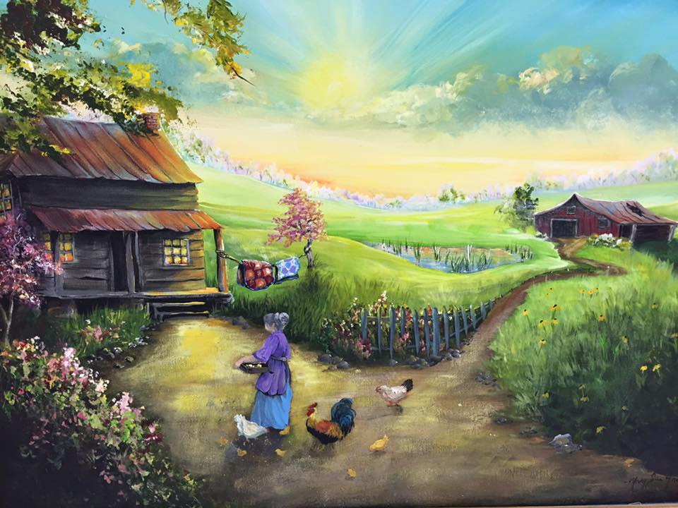
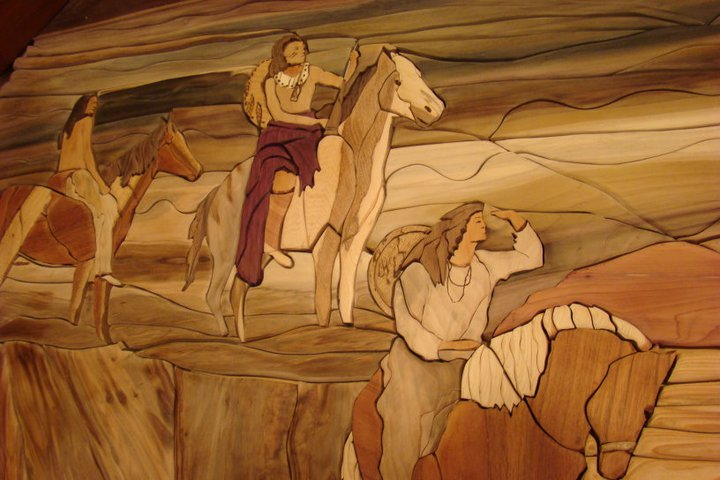
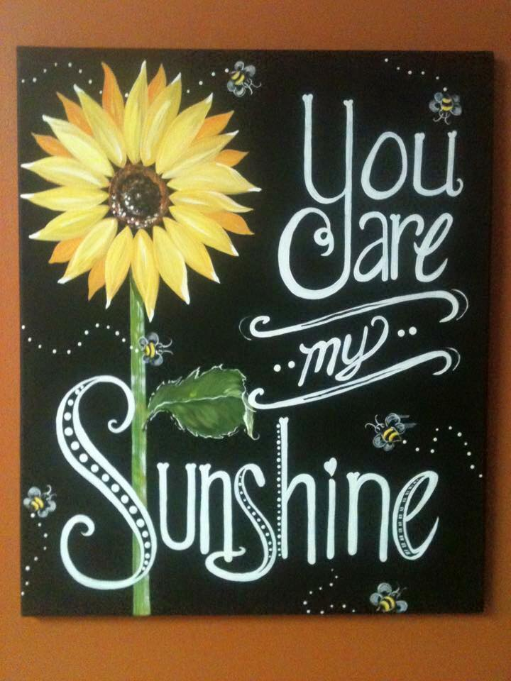
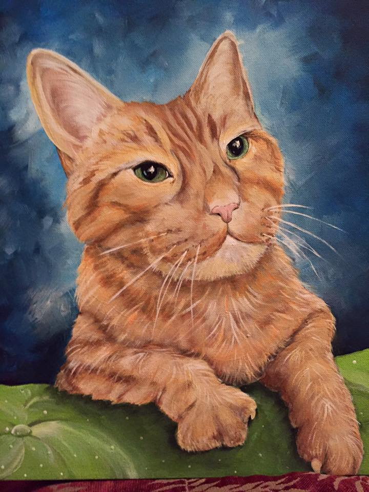

Custom Made Artwork, Just for You!
A staple of Mary's business since she has begun has been her custom artwork. She can do anything, from painting the inside of a house, to carving wood into the picture you want, to making a piece of furniture look new (or old, if thats what you're going for!). Everything she does is affordable and the results are amazing. She has years of experience dealing with clients of all backgrounds and knowledge about art, so she can for sure help you decorate your life, however you may want to do it!
Murals
Murals are one of the main thing mary started out doing after she began painting full time. She loves doing them, and even in the harder nooks and crannies, she can still create artwork. Her murals have ranged from small, cozy little paintings to grand scale, huge paintings. She is very skilled at giving a customer what they want, and can work around schedules that suit the customer best!
It's Easy!
Mary can work around much furniture, and doesn't need to have you move out an entire room for a mural. She can move things as needed or she can cover it to make sure nothing happens to it! Less hassle means more time spent on the painting itself, and can get your painting done much faster than some others might be able to complete. All that speed comes with a price on quality, right? Nope! Mary has tons of experience and knows her limits on speed while keeping quality her number one aspect.
It's Clean!
No paint will be forever stained on your furniture or your floors, even on the largest of paintings! Mary uses plastic, tape, and slow painting methods, all to reduce the chance of painting getting anywhere besides where she wants it!
It's Affordable!
A painting done on the wall in a hard to reach area with furniture in the way would cost a small fortune with a regular run-of-the-mill artist. Mary has experience and these obstacles do not deter her! She can work much faster and can stay focused for long periods of time, allowing her to get done faster and saving you money!
Intarsia
Just recently Mary picked up this beautiful craft. Intarsia is the cutting of wood into different shaped pieces to make a picture: almost like a mosaic made of different cut wood pieces. This has been one of her more popular art styles since she has started it, and she continues to practice it and refine her skills in it every chance she gets.
A Rare Art
Intarsia was started in Italy, around the 15th century. Many modern artist cannot create things with intarsia, or simply do not know about it. The works of art that Mary makes both capture her unique style, while also being in a unique style of art that is not seen often around the world today. This allows the works she makes to be something truly special, and each one just as wanted as the last.
Goes With Any Room Style
Intarsia pieces aren't made with a certain type of wood, meaning that the colors of each piece can be different, and can fit well into in style or color scheme you may have around your house. If you cannot find a type of wood you like, that's okay: Mary can just as easily paint the wood to match your wants and to make your piece of art look as good as it can.
Limited to the Imagination
Intarsia is a combination of mosaic art styles with woodworking. This means that the limit of the art is to the mind. It can be a 3D piece, have different textures, some pieces can be painted and some regualar: the possibilities are endless!
Miscellaneous Works
Signs
Signs for any occassion or room!
Signs can be used for all kinds of events, or can decorate a room to one's own personal taste. Mary's signs can really spruce up any room, or can make your event noticed by all who see it!
Personalized for you!
The signs that are made are customized for each customer! They are not cookie cutter signs that other artists may use. Mary takes instruction on almost every detail of the sign, but at the same time, still offers guidance using her experience as an artist!
Furniture Touch-ups
Is your Wooden Furniture looking a little rough?
Making furniture look unique in your home is important. Remember, it's the small details that matter! Mary can touch up furniture to make it look new, old, or somewhere in between!
Arts-n-Crafts
Want to add some creativity to your event?
Mary has worked with children for a large majority of her life, and loves every minute of it. She has taught numerous Arts-n-Crafts classes with children of all ages, and is available to teach these classes at your event!
Anything Else!
If you have an idea, Mary can make it!
It'd be really hard to list all the types of artwork and crafts Mary has done in the past, and even harder to list all the customers she has done them for. This means that the artwork seen on this page is not limitations, but rather guidance. If you have an idea for a piece of artwork but don't see it on thi page, that's okay! Contact Mary and she can guide you through the process and help you further your idea. Remember: NO IDEA IS TOO CRAZY!